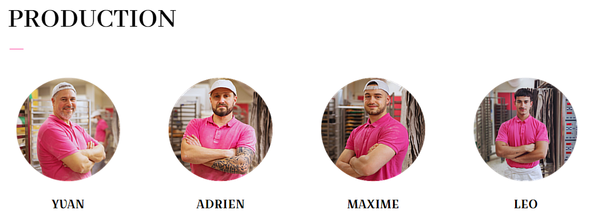
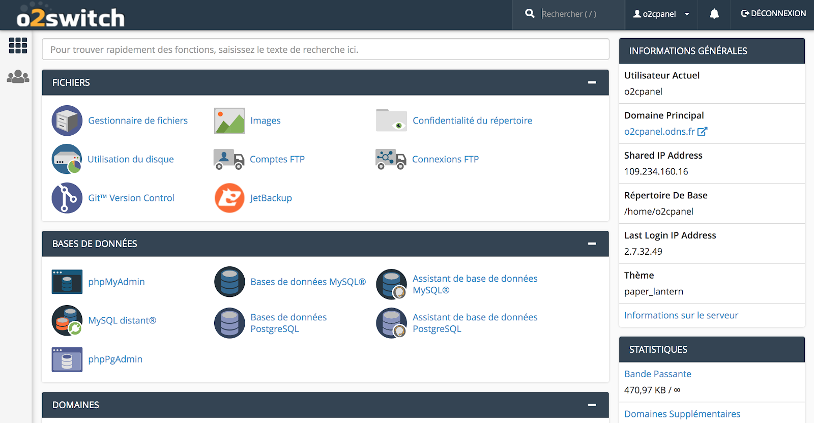

Premier Stage
Chez Elixir Créations - 16 mai au 1er juillet
Contexte
J'ai effectué mon premier stage au sein d'une agence web composée d'une petite équipe qui dispose de deux boîtes distinctes Elixir Créations et WebAtHeart, une sur Lyon et une sur Vienne.
J'y ai passé sept semaines au total dont majoritairement du télétravail et des échanges sur la plateforme Discord et/ou par email pour ce qui est des demandes journalières.
Missions
Maintenance de divers sites en fabrication.
Par exemple, je me suis chargé de développer quelques fonctionnalités sur les sites sur lesquels on m'a chargé d'avancer dont ici Pascalis
Ci dessous, on m'avait demandé de les placer de sorte à ce qu'ils soient rangés en ligne de 4 et qu'on puisse les identifier (Prénom..)
Création d'un site d'E-Commerce.
Accès au domaine du réseau par le biais d'O2Switch avec les certificats SSL, Gestion des droits etecera..
Bilan
En conclusion, ça m'a beaucoup appris à travailler au sein d'un petit comité et à acquérir des connaissances sur des technologies que je ne connaissais pas forcément bien comme les extensions de WordPress (Oxygen, Divi, Elementor..)